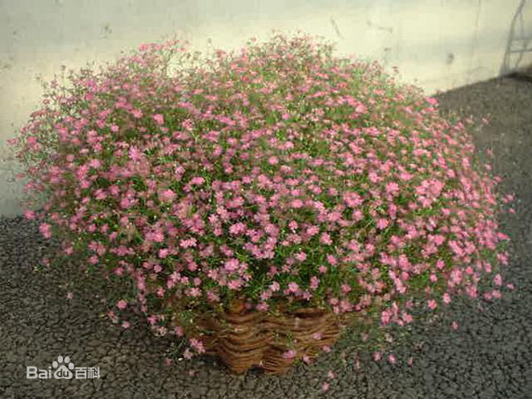

满天星
满天星，原名：圆锥石头花，别名：锥花丝石竹、圆锥花丝石竹、
丝石竹、锥花霞草、满天星，石竹科、石头花属多年生草本。
产新疆阿尔泰山区和塔什库尔干。耐寒，喜冷凉气候，忌炎热，多雨。
生于海拔1 100-1 500米河滩、草地、固定沙丘、石质山坡及农田中。
哈萨克斯坦、俄罗斯（西伯利亚）、蒙古（西部）、欧洲（西部、
中部和东部）、北美也有。根、茎可供药用。栽培可供观赏。
满天星的花语是:甘愿做配角，只愿在你身边。
形态特征
多年生草本,高30-80厘米。根粗壮。茎单生，稀数个丛生，直立，多分枝，
无毛或下部被腺毛。叶片披针形
或线状披针形，长2-5厘米，宽2.5-7毫米，顶端渐尖，中脉明显。
圆锥状聚伞花序多分枝，疏散，花小而多；花梗纤细，长2-6毫米，无毛；
苞片三角形，急尖；花萼宽钟形，长1.5-2毫米，具紫色宽脉，萼齿卵形，圆钝，
边缘白色，膜质；花瓣白色或淡红色，匙形，长约3毫米，宽约1毫米，顶端平截或
圆钝；花丝扁线形，与花瓣近等长，花药圆形；子房卵球形，直径约1毫米，花柱细长。
蒴果球形，稍长于宿存萼，4瓣裂；种子小，圆形，直径约1毫米，红褐色，具整齐的钝
疣状凸起。花期6-8月，果期8-9月。

分布情况
产新疆阿尔泰山区和塔什库尔干。哈萨克斯坦、俄罗斯（西伯利亚）、蒙古（西部）、
欧洲（西部、中部和东部）、北美也有。模式标本采自俄罗斯西伯利亚
满天星的不同花色
满天星的花语
清纯、关怀、恋爱、配角、真爱、纯洁美好的心灵。